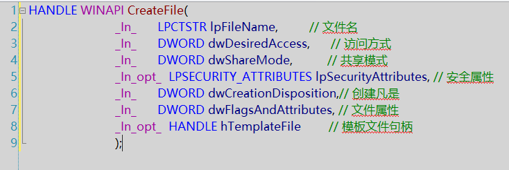
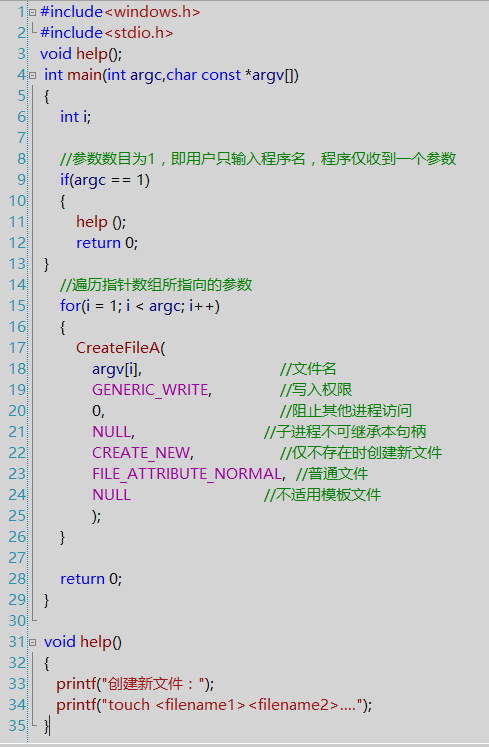
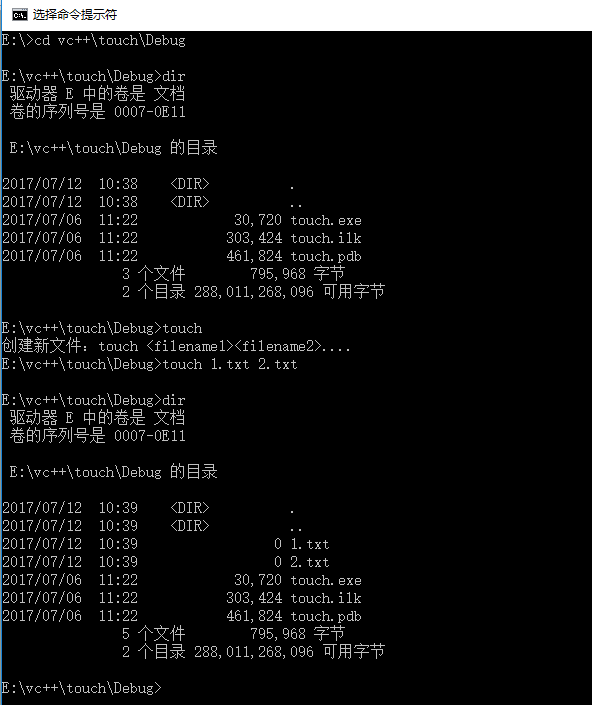
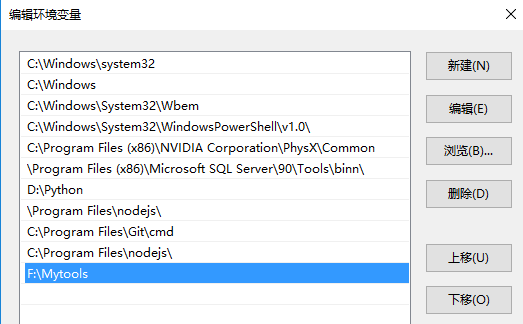

<!DOCTYPE html><html lang="null"><head><meta http-equiv="content-type" content="text/html; charset=utf-8"><meta content="width=device-width, initial-scale=1.0, maximum-scale=1.0, user-scalable=0" name="viewport"><meta content="yes" name="apple-mobile-web-app-capable"><meta content="black-translucent" name="apple-mobile-web-app-status-bar-style"><meta content="telephone=no" name="format-detection"><meta name="renderer" content="webkit"><title>文件系统的简单例子 - 土豆儿的博客</title><meta name="description" content=" 以CreateFile为例，写一个创建文件的小工具。顺便介绍一下句柄的概念，句柄就是运行在程序中的不同对象或者同类对象中的不同实例。可以理解为一辆车上的窗户、每一个轮胎、方向盘等等。 CreateFile  其中”In“表示输入参数，”Out“表示输出参数，”opt“表示参数可选，就是可以设置为”"><link type="text/css" rel="stylesheet" href="/css/basic.css?v=0.0.0"><link type="text/css" rel="stylesheet" href="/css/pure.css?v=0.0.0"><link type="text/css" rel="stylesheet" href="/css/style.css?v=0.0.0"><script type="text/javascript" src="//cdn.bootcss.com/jquery/1.11.0/jquery.min.js"></script></head></html><body><div class="body_container"><div id="header"><div class="site-name"><h1 class="hidden">文件系统的简单例子</h1><a id="logo" href="/.">土豆儿的博客</a></div><div id="nav-menu"><div class="bitcron_nav"><div class="site_nav_wrap"><div class="site_nav"><span class="a_container"><a href="/." class="selected active current">首页</a></span><span class="a_container"><a href="/archives/">归档</a></span></div></div></div></div></div><div id="layout" class="pure-g"><div class="pure-u-1 pure-u-md-3-4"><div class="content_container"><div class="post"><h1 class="post-title">文件系统的简单例子</h1><div class="post-meta">Jul 12, 2017<script src="https://dn-lbstatics.qbox.me/busuanzi/2.3/busuanzi.pure.mini.js" type="text/javascript"></script><span class="meta-space">  |  </span><span id="busuanzi_container_page_pv"><span id="busuanzi_value_page_pv"></span><span> 浏览</span></span></div><div class="post-content"><p> 以CreateFile为例，写一个创建文件的小工具。顺便介绍一下句柄的概念，句柄就是运行在程序中的不同对象或者同类对象中的不同实例。可以理解为一辆车上的窗户、每一个轮胎、方向盘等等。</p>
<p> CreateFile<br> <br> 其中”<em>In</em>“表示输入参数，”<em>Out</em>“表示输出参数，”<em>opt</em>“表示参数可选，就是可以设置为”NULL”.</p>
<p> 同样用VS2008，先建立一个空的工程，建立一个文件如下：<br> <br> 接下来，只生成文件，生成之后，可以在Debug目录里找到.exe文件。打开<br> cmd，到Debug目录下，进行如下操作：<br> cd vc++\touch\Debug  //这是我的路径<br> dir                  //查看当前目录下的文件<br> touch                //执行touch<br> touch 1.txt 2.txt    //创建文件1.txt,2.txt<br> 此时，文件也是创建在当前目录Debug下的，如果想创建在别的地方，需要修改路径。</p>
<p> 再次dir,我们可以看到目录里多了文件1.txt,2.txt，说明创建成功！<br> </p>
<hr>
<h2 id="CMD小工具"><a href="#CMD小工具" class="headerlink" title="CMD小工具"></a>CMD小工具</h2><p> 我们可以在一个文件夹里存放这样的.exe程序，将之前Debug里的touch.exe复制到新的文件夹里，并设置环境变量，就可以在cmd直接使用，不用进入文件了！</p>
<p> 环境变量的设置：计算机右键-&gt;属性-&gt;高级系统设置-&gt;环境变量， 在系统环境变量中找到Path,编辑，加入路径，如图：<br> </p>
</div><div class="tags"></div></div></div></div><div class="pure-u-1-4"><div id="sidebar"><div class="widget"><form action="//www.google.com/search" method="get" accept-charset="utf-8" id="search" target="_blank" class="search-form"><input type="text" name="q" maxlength="20" placeholder="Search"/><input type="hidden" name="sitesearch" value="https://CookieZH.github.io"/></form></div><div class="widget"><div class="widget-title"> 分类</div><ul class="category-list"><li class="category-list-item"><a class="category-list-link" href="/categories/Windows编程/">Windows编程</a><span class="category-list-count">5</span></li></ul></div><div class="widget"><div class="widget-title"> 标签</div><div class="tagcloud"><a href="/tags/逆向/" style="font-size: 12px;">逆向</a> <a href="/tags/杂谈/" style="font-size: 12px;">杂谈</a></div></div><div class="widget"><div class="widget-title"> 最新文章</div><ul class="post-list"><li class="post-list-item"><a class="post-list-link" href="/2017/08/01/za-2/">VC缺少dumpbin.dll的解决方法</a></li><li class="post-list-item"><a class="post-list-link" href="/2017/08/01/windows-5/">覆盖代码挂钩API</a></li><li class="post-list-item"><a class="post-list-link" href="/2017/08/01/windows-4/">远程注入DLL</a></li><li class="post-list-item"><a class="post-list-link" href="/2017/07/27/za-1/">Git库同步</a></li><li class="post-list-item"><a class="post-list-link" href="/2017/07/20/reverse-2/">破解小程序TraceMe</a></li><li class="post-list-item"><a class="post-list-link" href="/2017/07/12/reverse-1/">破解小程序reverseTest.exe</a></li><li class="post-list-item"><a class="post-list-link" href="/2017/07/12/Windows-3/">进程的小例子</a></li><li class="post-list-item"><a class="post-list-link" href="/2017/07/12/windows-2/">文件系统的简单例子</a></li><li class="post-list-item"><a class="post-list-link" href="/2017/07/11/post-name/">走进Windows的API</a></li><li class="post-list-item"><a class="post-list-link" href="/2017/07/11/hello-world/">Hello</a></li></ul></div><div class="widget"><div class="widget-title"> 友情链接</div><ul class="links-list"><li class="links-list-item"><a href="http://www.guoyunzhe.com" title="小胖墩儿的博客" target="_blank">小胖墩儿的博客</a></li></ul></div></div></div></div><div id="footer">© <a href="/." rel="nofollow">土豆儿的博客.</a> Powered by<a rel="nofollow" target="_blank" href="https://hexo.io"> Hexo.</a> Theme<a target="_blank" href="https://github.com/7ye/maupassant-hexo"> Maupassant.</a></div><a id="back_to_top" href="javascript:void(0)" class="back_to_top"><span>△</span></a><script type="text/javascript" src="/js/totop.js?v=0.0.0"></script><link rel="stylesheet" href="/css/jquery.fancybox.css"><script type="text/javascript" src="//cdn.bootcss.com/fancybox/2.1.5/jquery.fancybox.pack.js"></script><script type="text/javascript" src="/js/fancybox.js?v=0.0.0"></script><script>function auto_code_fit(){
  if($(".highlight").length != 0){
    var pc_width = $(".post-content").width();
    $(".highlight .code").find("pre").width((pc_width-70)+"px");
  }
}
window.onresize = function(){
  auto_code_fit();
}
auto_code_fit();</script></div></body>